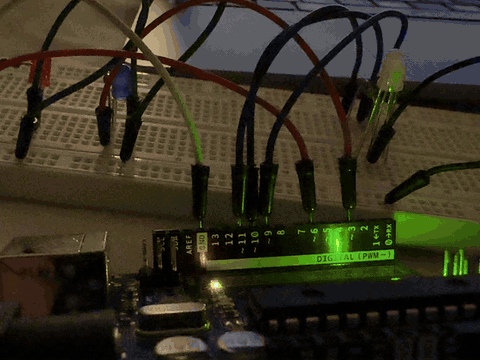

Here is all the documentation for assignment 1!
A police-style holiday light: two single-color LEDs and an RGB LED
| Part | Arduino pin | Resistor | Role |
|---|---|---|---|
| LED A (red) | D3 | 300 Ω | Side 1 |
| LED B (blue) | D6 | 300 Ω | Side 2 |
| RGB LED, red channel | D9 | 300 Ω | Side 1 |
| RGB LED, green channel | D10 | 300 Ω | Always off |
| RGB LED, blue channel | D11 | 300 Ω | Side 2 |
Each single LED is wired: Arduino pin → 300 Ω resistor → LED anode (long leg) → LED cathode (short leg) → GND. The RGB LED is a common-cathode type: each color pin goes through its own 300 Ω resistor to that color's leg, and the common (longest) leg goes to GND. Every LED has its own pin and its own resistor, so each one can be switched on and off separately; this sketch groups them into the two sides of a police light.
Only 300 Ω resistors were available when I built the circuit, so every LED uses one. An LED needs a resistor in series because once the LED turns on, its voltage stays nearly fixed at its forward voltage (Vf), and nothing else would limit the current. Ohm's law across the resistor gives the current:
I = (Vsupply − Vf) / RAn Uno output pin at HIGH is about 5 V. The forward voltages are typical values for standard 5 mm LEDs: about 2.0 V for red and about 3.0 V for blue (blue LEDs need a larger voltage because of the wider semiconductor energy gap that makes shorter-wavelength light).
| LED | Vf | Voltage across resistor 5 V − Vf | Current I = V / 300 Ω | Resistor power P = I²R |
|---|---|---|---|---|
| Red (LED A, RGB red) | 2.0 V | 3.0 V | 3.0 / 300 = 10.0 mA | (0.010)² × 300 = 30 mW |
| Blue (LED B, RGB blue) | 3.0 V | 2.0 V | 2.0 / 300 = 6.7 mA | (0.00667)² × 300 ≈ 13 mW |
When a pin is HIGH the LED lights, and when it is LOW it turns off. loop() flashes side 1 three times (600 ms on, 10 ms off per flash), pauses 120 ms, then flashes side 2 the same way, then pauses 120 ms and repeats. A full cycle takes 2 × (3 × 610 ms + 120 ms) = 3900 ms. FLASH_ON_MS and FLASH_OFF_MS are plain int variables (not const) so they are easy to change when testing blink speed in question 3. The helper flashPair() is not called by loop(), which writes the pins directly.
// Police-style light: two separate LEDs plus an RGB LED, all alternating.
// LED A (red) on pin 3, LED B (blue) on pin 6 (each through a 300-ohm resistor to GND).
// RGB LED (common cathode): red -> pin 9, green -> pin 10, blue -> pin 11.
// Each color pin goes through a 300-ohm resistor. Common (-) leg -> GND.
const int LED_PIN_A = 3; // Pin that drives LED A (the red LED)
const int LED_PIN_B = 6; // Pin that drives LED B (the blue LED)
const int RED_PIN = 9; // Pin that drives the RGB red channel
const int GREEN_PIN = 10; // Pin that drives the RGB green channel (kept off)
const int BLUE_PIN = 11; // Pin that drives the RGB blue channel
const int FLASH_COUNT = 3; // Quick flashes per side before switching
int FLASH_ON_MS = 600; // Flash on-time in ms (not const, so it can be tuned)
int FLASH_OFF_MS = 10; // Gap between flashes in ms (not const, so it can be tuned)
const int SWITCH_PAUSE_MS = 120; // Pause before the other side starts, in ms
// Flash one side (pinOn) while the other side (pinOff) stays dark.
// This helper is not called by loop() below; loop() writes the pins directly.
void flashPair(int pinOn, int pinOff) { // Helper that flashes one side (unused by loop)
for (int i = 0; i < FLASH_COUNT; i++) { // Repeat the flash FLASH_COUNT times
digitalWrite(pinOn, HIGH); // Turn the flashing side on
digitalWrite(pinOff, LOW); // Make sure the other side is off
delay(FLASH_ON_MS); // Keep the light on for the flash duration
digitalWrite(pinOn, LOW); // Turn the flashing side off
delay(FLASH_OFF_MS); // Wait the gap before the next flash
}
}
void setup() { // Runs once at startup to configure the pins
pinMode(LED_PIN_A, OUTPUT); // Make the LED A pin an output
pinMode(LED_PIN_B, OUTPUT); // Make the LED B pin an output
pinMode(RED_PIN, OUTPUT); // Make the RGB red pin an output
pinMode(GREEN_PIN, OUTPUT); // Make the RGB green pin an output
pinMode(BLUE_PIN, OUTPUT); // Make the RGB blue pin an output
digitalWrite(GREEN_PIN, LOW); // Keep the RGB green channel off
}
void loop() { // Runs over and over after setup
// Side 1: LED A and RGB red flash; LED B and RGB blue stay off.
for (int i = 0; i < FLASH_COUNT; i++) { // Repeat for each quick flash
digitalWrite(LED_PIN_A, HIGH); // Turn LED A on
digitalWrite(RED_PIN, HIGH); // Turn the RGB red channel on
digitalWrite(LED_PIN_B, LOW); // Make sure LED B is off
digitalWrite(BLUE_PIN, LOW); // Make sure the RGB blue channel is off
delay(FLASH_ON_MS); // Keep side 1 lit for the flash duration
digitalWrite(LED_PIN_A, LOW); // Turn LED A off
digitalWrite(RED_PIN, LOW); // Turn the RGB red channel off
delay(FLASH_OFF_MS); // Wait the gap before the next flash
}
delay(SWITCH_PAUSE_MS); // Pause before side 2 starts
// Side 2: LED B and RGB blue flash; LED A and RGB red stay off.
for (int i = 0; i < FLASH_COUNT; i++) { // Repeat for each quick flash
digitalWrite(LED_PIN_B, HIGH); // Turn LED B on
digitalWrite(BLUE_PIN, HIGH); // Turn the RGB blue channel on
digitalWrite(LED_PIN_A, LOW); // Make sure LED A is off
digitalWrite(RED_PIN, LOW); // Make sure the RGB red channel is off
delay(FLASH_ON_MS); // Keep side 2 lit for the flash duration
digitalWrite(LED_PIN_B, LOW); // Turn LED B off
digitalWrite(BLUE_PIN, LOW); // Turn the RGB blue channel off
delay(FLASH_OFF_MS); // Wait the gap before the next flash
}
delay(SWITCH_PAUSE_MS); // Pause before side 1 starts again
}The Arduino Uno has 14 digital pins (D0–D13) D1-D13 is working, assuming LEDs can operate at a low mA, then the power is not a limiting factor, so that there should have 13 independently blilnking LED
Published values range from roughly 30 to over 60 flashes per second depending on the person and the brightness of the light.
I tested by setting FLASH_ON_MS and FLASH_OFF_MS to the same value
| FLASH_ON_MS = FLASH_OFF_MS | Blink rate |
|---|---|
| 50 ms | 10 Hz |
| 20 ms | 25 Hz |
| 16 ms | 31 Hz |
| 12 ms | 42 Hz |
| 8 ms | 62.5 Hz |
| 5 ms | 100 Hz |
In my test, the LEDs looked steady at about 100 Hz
Yes. I wrote the original sketch myself and used Claude (Anthropic's AI assistant) to help finish this page: building the the circuit from my hand drawn version, voltage-vs-time graph
Reflection: The AI saved time on the repetitive parts (commenting every line, laying out the page and graph)I still checked the resistor math against Ohm's law and tested the circuit on the breadboard, because a wrong value could damage an LED or the board.